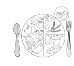
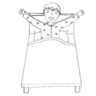
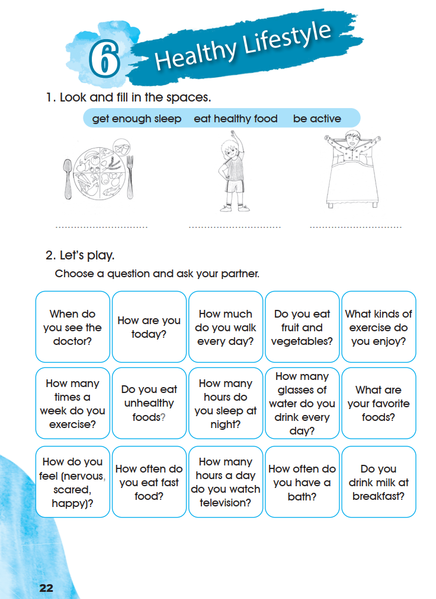
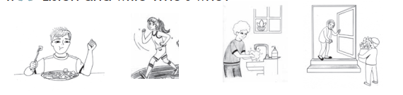
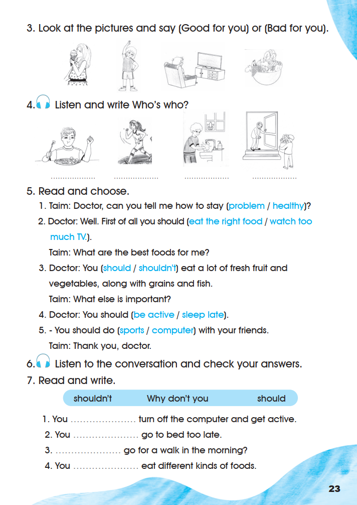
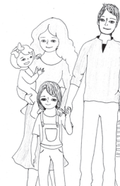
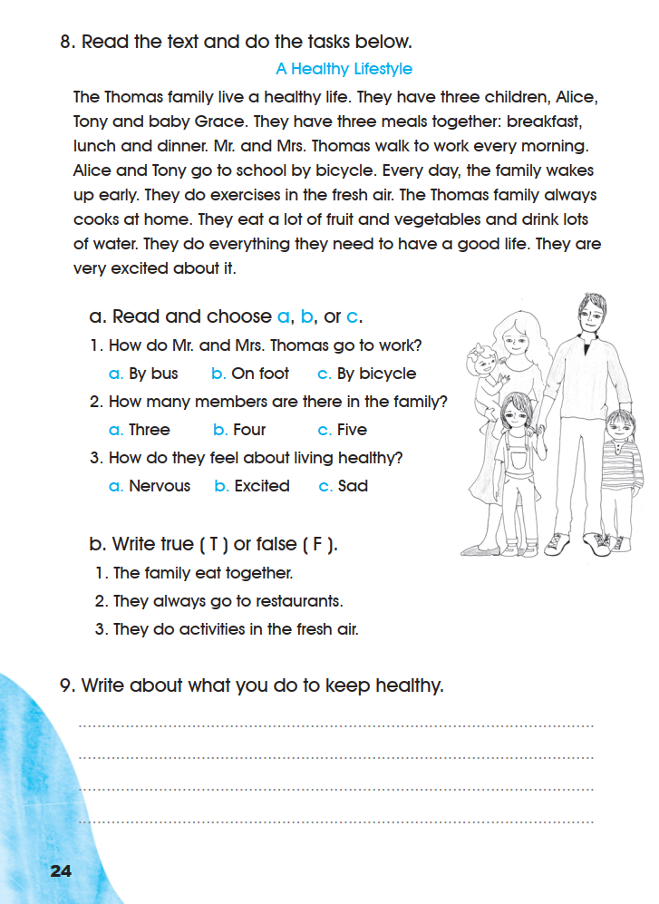

Workbook — Healthy Lifestyle
Exercises 1–9 appear in their original order across pages 22–24. Listening exercises keep every printed word and picture but claim no answer, because the recordings were not supplied.
1. Look and fill in the spaces.
- get enough sleep
- eat healthy food
- be active


0 of 3 filled.
2. Let’s play.
Choose a question and ask your partner.
- When do you see the doctor?
- How are you today?
- How much do you walk every day?
- Do you eat fruit and vegetables?
- What kinds of exercise do you enjoy?
- How many times a week do you exercise?
- Do you eat unhealthy foods?
- How many hours do you sleep at night?
- How many glasses of water do you drink every day?
- What are your favorite foods?
- How do you feel (nervous, scared, happy)?
- How often do you eat fast food?
- How many hours a day do you watch television?
- How often do you have a bath?
- Do you drink milk at breakfast?
The fifteen question cards are printed in three rows of five and are reproduced in that reading order. The card “What are your favorite foods?” keeps the book’s spelling. This is a speaking game; the page prints no key.
1. Look and fill in the spaces: 1 eat healthy food · 2 be active · 3 get enough sleep.
Each phrase is read from the line drawing printed under it: the plate of food, the stretching boy, and the boy waking up in bed. The page prints no key.
Open the source page · Workbook · p. 22
This is the original supplied image, shown without redrawing or generation.

3. Look at the pictures and say (Good for you) or (Bad for you).
This is a speaking task: name each picture and say “Good for you” or “Bad for you”. The page prints no key, and none is invented here.
4. Listen and write Who’s who?

0 of 4 filled.
5. Read and choose.
0 of 5 answered.
The printed dialogue also contains the lines “Taim: What are the best foods for me?”, “Taim: What else is important?” and “Taim: Thank you, doctor.” They are printed above in their positions between the numbered items.
6. Listen to the conversation and check your answers.
7. Read and write.
- shouldn’t
- Why don’t you
- should
- 1
You …………… turn off the computer and get active.
- 2
You …………… go to bed too late.
- 3
…………… go for a walk in the morning?
- 4
You …………… eat different kinds of foods.
0 of 4 answered.
5. Read and choose: 1 healthy · 2 eat the right food · 3 should · 4 be active · 5 sports.
7. Read and write: 1 should · 2 shouldn’t · 3 Why don’t you · 4 should.
Every choice follows the printed sentence around the gap. The recording was not supplied, so exercise 6 adds no answer of its own.
Open the source page · Workbook · p. 23
This is the original supplied image, shown without redrawing or generation.

8. Read the text and do the tasks below.
A Healthy Lifestyle
The Thomas family live a healthy life. They have three children, Alice, Tony and baby Grace. They have three meals together: breakfast, lunch and dinner. Mr. and Mrs. Thomas walk to work every morning. Alice and Tony go to school by bicycle. Every day, the family wakes up early. They do exercises in the fresh air. The Thomas family always cooks at home. They eat a lot of fruit and vegetables and drink lots of water. They do everything they need to have a good life. They are very excited about it.

a. Read and choose a, b, or c.
- 1
How do Mr. and Mrs. Thomas go to work?
- 2
How many members are there in the family?
- 3
How do they feel about living healthy?
0 of 3 answered.
b. Write true ( T ) or false ( F ).
- 1
The family eat together.
- 2
They always go to restaurants.
- 3
They do activities in the fresh air.
0 of 3 answered.
9. Write about what you do to keep healthy.
8 a. Read and choose: 1 b. On foot · 2 c. Five · 3 b. Excited.
8 b. True or false: 1 True · 2 False · 3 True.
9. Write about what you do to keep healthy: this is personal writing; the page prints no key. Model ideas: I get enough sleep. I eat fruit and vegetables every day. I walk to school. I play football with my friends.
Every answer in exercise 8 is stated in the printed text: “They have three meals together”, “Mr. and Mrs. Thomas walk to work”, “They do exercises in the fresh air” and “They are very excited about it”.
Open the source page · Workbook · p. 24
This is the original supplied image, shown without redrawing or generation.
